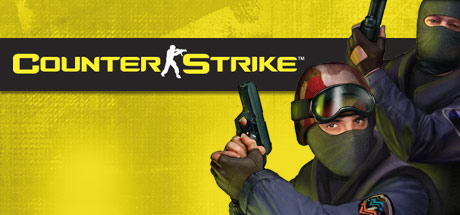

Counter-Strike було задумано в 1999 році студентами Джессом Кліффом і Мінном Лі як модифікацію до Half-Life. Лі під псевдонімом Gooseman вже розробляв модифікації Navy SEALs для Quake III та Action Quake 2 для Quake 2, присвячені боротьбі терористів зі спецпризначенцями, але вирішив, що доцільніше обрати більш реалістичну гру, якою вважав Half-Life. Паралельно навчаючись в університеті, Лі почав роботу над Counter-Strike. Кліфф був веб-дизайнером і зацікавившись Action Quake 2, познайомився з Лі та дізнався про його плани створити гру реалістичної тематики. Робота почалася в січні 1999 року. Кліфф створив сайт counter-strike.net, який привернув увагу несподівано великої кількості відвідувачів (понад 10000). Джесс з Міном створювали код, моделі, тоді як спільнота зацікавлених гравців розробляла карти. В березні 1999 року було сформувалася команда розробників Counter-Strike Team, а 18 червня 1999 було випущено версію BETA 1. Модифікація містила базові принципи бою, протиборчі команди, зброю, втім працювала нестабільно і багато аспектів не працювали належно. Зокрема, броня була практично марною[2]. Кожні 3-5 місяців випускалися оновлення, де впроваджувалися нова зброя, карти, та виправлялися помилки. Зокрема в BETA 3 було додано ніж для ближнього бою. Вже тоді розробники зіткнулися з проблемою читерства та намагалися боротися з ним. Counter-Strike стала популярнішою, ніж чимало самостійних ігор свого часу, привертаючи увагу преси. Наприкінці 1999 популярність Counter-Strike перевершила популярність Team Fortress Classic від Valve. Тож Counter-Strike Team було запропоновано роботу в Valve, а їхню гру видати окремо, а не як модифікацію. 12 квітня 2000 року Counter-Strike Team увійшла до Valve[3]. Для допомоги в розробці було виділено студію Barking Dog. За її підтримки вийшла версія BETA 5.0 з удосконаленим інтерфейсом, картами, фракціями, та змінами ігрового балансу[4]. 31 серпня 2000 року було оголошено, що Counter-Strike продаватиметься як окрема гра[5], а 9 листопада вийшла релізна версія Counter-Strike 1.0[6].
